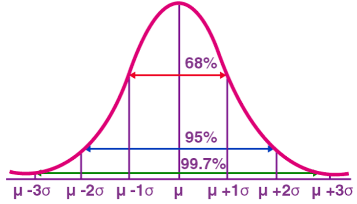
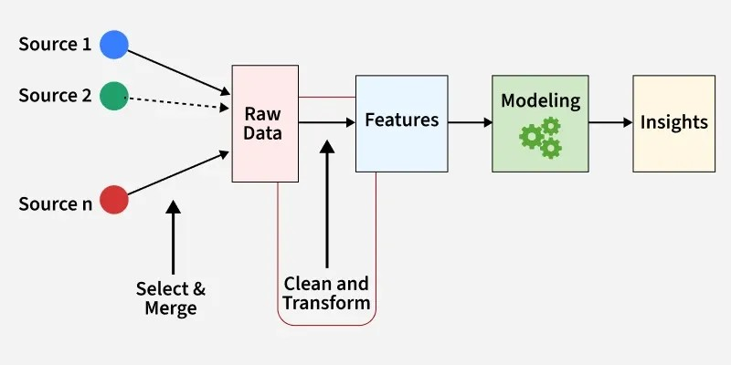
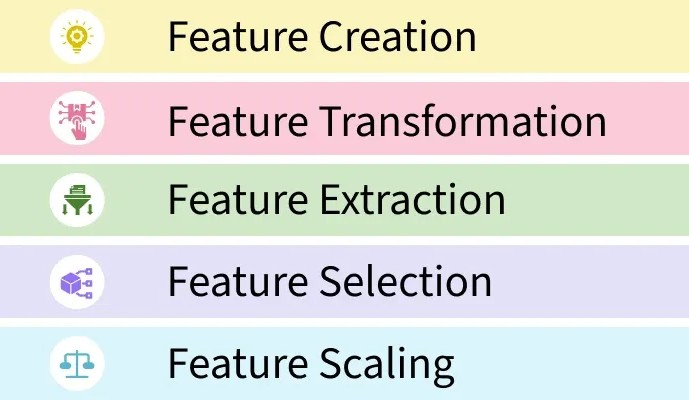

By the end of this chapter, you should be able to:
Engineer features from transaction data suitable for statistical and machine learning anomaly detection
Apply K-means clustering to identify groups of unusual transactions, and explain how feature choice shapes clustering results
Apply Isolation Forest to flag anomalous transactions, and explain the intuition behind how it works
Evaluate unsupervised detection methods using precision and recall against known anomalies
Explain why rule-based tests (Chapter 8) and model-based anomaly detection each catch patterns the other misses, and why real fraud detection programs use both
10.1 From Red Flags to Statistical Anomaly Detection
Chapter 8 built rule-based tests: weekend postings, round-dollar amounts, cutoff timing, duplicates, rare posters. Each rule looks for one specific, pre-defined pattern. This chapter introduces a different approach: unsupervised anomaly detection1, where a statistical or machine learning method looks for transactions that are unusual across several dimensions at once, without being told in advance exactly what pattern to look for.
We’ll use two datasets already familiar from earlier chapters:
general_ledger_large.csv (Chapter 5) — 752 transactions, including the 7 known outliers we identified there using a z-score threshold, which we can now use as a benchmark to evaluate these new methods against
10.2 Z Score - A Statistical Method for Anomaly Detection
A Z-score is a statistical measurement that tells you how many standard deviations a specific data point is from the average (mean). To find a Z-score, you subtract the dataset’s average from your data point, and then divide that number by the standard deviation:
Z-score of 0: The data point is exactly average.
Positive Z-score: The data point is above average.
Negative Z-score: The data point is below average
\[Z = \frac{x - \mu}{\sigma}\] Where, \(x\) = Your data point, \(\mu\) = The average of the dataset, and \(\sigma\) = The standard deviation.
Anomaly detection is the process of finding rare or unexpected events in data (like a sudden spike in website traffic or credit card fraud). Z-scores help find these events using a simple math rule. In normal data, about 99.7% of all data points fall between a Z-score of -3 and 3. This is often called the “3-sigma rule”. Any data point that lands outside this -3 to 3 range (meaning its Z-score is greater than 3 or less than -3) is so rare that it is usually flagged as an anomaly or outlier. Figure 10.1 shows the distribution of normal data points using z scores. Z-score curve is also called normal distribution curve or bell shaped curve.

Figure 10.1: Z Score and Distribution of Data Points
import pandas as pdimport numpy as npgl = pd.read_csv("data/general_ledger_large.csv")gl["entry_date"] = pd.to_datetime(gl["entry_date"])debit = gl[gl["debit"] >0].copy().reset_index(drop=True)# Recall the 7 known outliers from Chapter 5 -- we'll treat these as a# ground-truth benchmark for evaluating the new methods in this chaptermean_debit, std_debit = debit["debit"].mean(), debit["debit"].std()debit["z_score"] = (debit["debit"] - mean_debit) / std_debitdebit["known_outlier"] = debit["z_score"].abs() >3print("Known outliers:", debit["known_outlier"].sum())
Known outliers: 7
import polars as pl# Read the datagl_pl = pl.read_csv("data/general_ledger_large.csv", try_parse_dates=True)# Keep only debit transactionsdebit_pl = ( gl_pl .filter(pl.col("debit") >0))# Compute mean and standard deviationmean_debit = debit_pl.select( pl.col("debit").mean()).item()std_debit = debit_pl.select( pl.col("debit").std()).item()# Compute z-score and identify known outliersdebit_pl = ( debit_pl .with_columns( ( (pl.col("debit") - mean_debit)/ std_debit ).alias("z_score") ) .with_columns( ( pl.col("z_score").abs() >3 ).alias("known_outlier") ))print("Known outliers:", debit_pl["known_outlier"].sum())
Known outliers: 7
10.3 Feature Engineering for Anomaly Detection
Feature Engineering is the process of selecting, creating or modifying features like input variables or data to help machine learning models learn patterns more effectively. It involves transforming raw data into meaningful inputs that improve model accuracy and performance. Figure 10.2 shows the architecture of feature engineering.

Figure 10.2: Feature Engineering Architecture
Feature engineering process involves handling missing values, encoding categories, scaling numbers, creating new features or combining existing ones. It helps turn messy real-world data into a form that models can understand and use for better predictions. Figure 10.3 shows activities that are typically performed in feature engineering.

Figure 10.3: Feature Engineering Process
Feature Creation: Feature creation involves generating new features from domain knowledge or by observing patterns in the data.
Feature Transformation: Feature transformation adjusts features to improve model learning, such as encoding categorical variables, logarithimic transformation of skewed data, or adjusting the range of feature for consistency.
Feature Extraction: Feature extraction is transform existing features into a lower-dimensional or more informative representation. For example, Principal Component Analysis (PCA) is a feature extraction technique.
Feature Selection: Feature selection involves choosing a subset of relevant features to use in the model. For feature selection, we can use filter methods - statistical measures like correlation; wrapper methods - select feature based on model performance; and embedded methods - feature selection embedded in the model.
Feature Scaling: Feature scaling ensures all features contribute equally to the model. It involves min-max scaling or standard scaling.
Both methods in this chapter need transactions represented as numeric features, not raw dates and text. A few useful features for transaction-level fraud detection:
debit_pl = ( debit_pl .with_columns(# Natural log of (1 + debit) pl.col("debit").log1p().alias("log_amount"),# Weekend indicator (Saturday=6, Sunday=7 in Polars) (pl.col("entry_date").dt.weekday() >=6) .cast(pl.Int8) .alias("is_weekend"),# Day of the month pl.col("entry_date").dt.day().alias("day_of_month"), ))debit_pl.select("entry_id","debit","log_amount","is_weekend","day_of_month",).head()
shape: (5, 5)
entry_id
debit
log_amount
is_weekend
day_of_month
str
f64
f64
i8
i8
"JE3253"
1231.76
7.117011
0
1
"JE3413"
3024.76
8.014918
0
1
"JE3476"
4476.03
8.406715
0
1
"JE3030"
1488.48
7.306182
0
2
"JE3066"
2705.81
7.903526
0
2
log_amount compresses the wide range of transaction sizes (recall the heavy right skew from Chapter 5), which helps distance-based methods like clustering treat amount differences more sensibly.
is_weekend encodes a categorical pattern (Chapter 8’s weekend test) as a numeric feature.
day_of_month can help surface period-end clustering patterns.
Which features you choose has a major effect on what these methods find — as the next section shows directly.
10.4 K-Means Clustering for Anomaly Detection
K-means clustering groups similar observations together based on distance in feature space. For anomaly detection, the idea is simple: unusual transactions often end up isolated in their own small cluster, separate from the bulk of “normal” activity.
10.4.1 Attempt 1: Clustering on Amount and Weekend Indicator
from sklearn.preprocessing import StandardScalerfrom sklearn.cluster import KMeansimport polars as pl# Select the features and convert to NumPyfeatures_v1 = debit_pl.select("log_amount","is_weekend").to_numpy()# Standardize the featuresX_scaled_v1 = StandardScaler().fit_transform(features_v1)# Fit KMeanskmeans_v1 = KMeans( n_clusters=4, random_state=42, n_init=10)clusters = kmeans_v1.fit_predict(X_scaled_v1)# Add cluster labels back to the Polars DataFramedebit_pl = debit_pl.with_columns( pl.Series("cluster_v1", clusters))# Equivalent of value_counts()cluster_counts = ( debit_pl .group_by("cluster_v1") .len() .sort("cluster_v1"))print(cluster_counts)
Smallest cluster size: 23
Known outliers captured: 2 / 7
This result is disappointing — the smallest cluster only captures 2 of the 7 known outliers.
WarningWhy Did This Fail?
Check how many transactions in the whole dataset occurred on a weekend:
debit["is_weekend"].sum()
np.int64(23)
Exactly 23 — and our smallest cluster also had 23 members. The clustering essentially just separated weekend from weekday transactions, because is_weekend is a binary feature that creates a very clean, easy-to-separate split, while log_amount differences (even for our large outliers) look comparatively small after scaling. Only the outliers that happened to also land on a weekend got captured — a coincidence of our injected data design, not a genuine amount-based detection.
This is an important lesson: clustering results are entirely shaped by which features you include and how they’re scaled. A single dominant categorical feature can hijack the clustering structure away from the pattern you actually care about.
10.4.2 Attempt 2: Clustering on Amount-Focused Features Only
from sklearn.preprocessing import StandardScalerfrom sklearn.cluster import KMeansimport polars as pl# Select the features and convert to NumPyfeatures_v2 = debit_pl.select("log_amount","z_score").to_numpy()# Standardize the featuresX_scaled_v2 = StandardScaler().fit_transform(features_v2)# Fit KMeanskmeans_v2 = KMeans( n_clusters=4, random_state=42, n_init=10)clusters = kmeans_v2.fit_predict(X_scaled_v2)# Add cluster labels back to the Polars DataFramedebit_pl = debit_pl.with_columns( pl.Series("cluster_v2", clusters))# Equivalent of value_counts()cluster_counts_v2 = ( debit_pl .group_by("cluster_v2") .len() .sort("cluster_v2"))print(cluster_counts_v2)
# Find the cluster with the fewest observationssmallest_cluster_v2 = ( debit_pl .group_by("cluster_v2") .len() .sort("len") .get_column("cluster_v2")[0])# Filter rows belonging to the smallest clusterflagged_v2 = ( debit_pl .filter(pl.col("cluster_v2") == smallest_cluster_v2))print("Smallest cluster size:", flagged_v2.height)( flagged_v2 .select("entry_id","debit","known_outlier", ) .sort("debit", descending=True))
Smallest cluster size: 7
shape: (7, 3)
entry_id
debit
known_outlier
str
f64
bool
"JE3903"
176500.0
true
"JE3900"
145000.0
true
"JE3906"
121000.0
true
"JE3902"
112000.0
true
"JE3901"
98000.0
true
"JE3904"
87000.0
true
"JE3905"
63000.0
true
By dropping the dominant is_weekend feature and clustering purely on magnitude-related features, the smallest cluster now contains exactly the 7 known outliers — no more, no less.
This side-by-side comparison is worth remembering beyond this chapter: an unsupervised method isn’t “wrong” when it produces an unexpected result — it’s finding some real structure in the data, just not necessarily the structure you were hoping for. Before trusting a clustering result, always sanity-check what’s actually driving the groupings, the way we did here by checking the weekend transaction count.
10.5 Isolation Forest
Isolation Forest takes a different approach: rather than grouping similar points together, it tries to isolate each observation with a series of random splits. The intuition is that anomalies — points that are few and different — take fewer splits to isolate than normal points buried in a dense cluster of similar observations. Points that get isolated quickly, across many random trees, receive a low (more anomalous) score.
from sklearn.ensemble import IsolationForestimport polars as pl# Select features and convert to NumPyiso_features = ( debit_pl .select("debit","is_weekend","day_of_month" ) .to_numpy())# Fit Isolation Forestiso_model = IsolationForest( n_estimators=200, contamination=0.02, random_state=42)anomaly_pred = iso_model.fit_predict(iso_features) # -1 = anomaly, 1 = normalanomaly_score = iso_model.decision_function(iso_features) # Lower = more anomalous# Add results back to the Polars DataFramedebit_pl = debit_pl.with_columns( [ pl.Series("anomaly_pred", anomaly_pred), pl.Series("anomaly_score", anomaly_score), ])# Filter flagged anomaliesflagged_iso = ( debit_pl .filter(pl.col("anomaly_pred") ==-1) .sort("anomaly_score"))print("Flagged:", flagged_iso.height)flagged_iso.select("entry_id","debit","anomaly_score","known_outlier")
Flagged: 16
shape: (16, 4)
entry_id
debit
anomaly_score
known_outlier
str
f64
f64
bool
"JE3903"
176500.0
-0.12196
true
"JE3904"
87000.0
-0.104764
true
"JE3900"
145000.0
-0.080345
true
"JE3906"
121000.0
-0.070663
true
"JE3902"
112000.0
-0.069159
true
…
…
…
…
"JE3350"
3160.54
-0.006935
false
"JE3199"
2287.49
-0.006081
false
"JE3426"
5651.14
-0.004339
false
"JE3006"
869.4
-0.002835
false
"JE3905"
63000.0
-0.000022
true
Unlike our first clustering attempt, Isolation Forest — even with is_weekend included as a feature — successfully captures all 7 known outliers, plus a few additional transactions. Isolation Forest tends to be more robust to this kind of feature-dominance issue than K-means, since it isolates based on how easy a point is to separate from the rest, across many random trees, rather than relying on a single distance calculation.
10.5.1 The contamination Parameter Controls the Precision-Recall Tradeoff
contamination tells the model what fraction of the data to expect as anomalous. This directly trades off precision (of what you flag, how much is real) against recall (of what’s real, how much you catch).
from sklearn.metrics import precision_score, recall_scoreresults = []for contamination in [0.01, 0.02, 0.05]: model = IsolationForest(n_estimators=200, contamination=contamination, random_state=42) pred = model.fit_predict(iso_features) flagged = pred ==-1 results.append({"contamination": contamination,"num_flagged": flagged.sum(),"precision": round(precision_score(debit["known_outlier"], flagged), 3),"recall": round(recall_score(debit["known_outlier"], flagged), 3), })pd.DataFrame(results)
contamination
num_flagged
precision
recall
0
0.01
8
0.750
0.857
1
0.02
16
0.438
1.000
2
0.05
38
0.184
1.000
from sklearn.ensemble import IsolationForestfrom sklearn.metrics import precision_score, recall_scoreimport polars as plresults = []# Convert ground truth labels from Polars to NumPyy_true = debit_pl["known_outlier"].to_numpy()# iso_features is already a NumPy array from the previous stepfor contamination in [0.01, 0.02, 0.05]: model = IsolationForest( n_estimators=200, contamination=contamination, random_state=42 ) pred = model.fit_predict(iso_features)# -1 = anomaly, convert to True/False flagged = pred ==-1 results.append( {"contamination": contamination,"num_flagged": flagged.sum(),"precision": round( precision_score(y_true, flagged),3 ),"recall": round( recall_score(y_true, flagged),3 ), } )# Create Polars DataFrameresults_pl = pl.DataFrame(results)results_pl
shape: (3, 4)
contamination
num_flagged
precision
recall
f64
i64
f64
f64
0.01
8
0.75
0.857
0.02
16
0.438
1.0
0.05
38
0.184
1.0
ImportantReading This Table
At contamination=0.01, the model flags only 8 transactions, catching 6 of the 7 outliers (86% recall) with high precision (75%) — a tight, high-confidence list. At contamination=0.05, it flags 38 transactions and catches all 7 outliers (100% recall), but precision drops to just 18% — meaning roughly 4 out of every 5 flagged transactions turn out not to be one of our known outliers.
Neither setting is “correct” in the abstract. A team with limited review capacity might prefer the tighter, higher-precision list even if it risks missing one real anomaly; a team performing a high-stakes investigation might prefer to cast a wider net and accept more false positives in exchange for near-certain coverage. This tradeoff, not just the algorithm itself, is a central design decision in any real fraud detection program.
10.6 Combining Model-Based and Rule-Based Detection
Do Isolation Forest and the rule-based tests from Chapter 8 actually agree? Let’s apply Isolation Forest to audit_test_transactions.csv — the dataset with known injected scenarios — and compare.
Isolation Forest catches 5 of our 7 deliberately injected scenarios — but misses both duplicate entries (JE5903 and JE5904) entirely.
ImportantWhy the Model Misses the Duplicates — and Why That’s the Whole Point
Look at what features we gave the model: amount, is_weekend, is_year_end, poster_frequency. Nothing about the duplicate entries is unusual along any of those dimensions — they’re a completely ordinary $3,000 rent payment, on a weekday, by a normal poster. The only thing wrong with them is that an identical entry appears twice, which isn’t a pattern any of our numeric features can capture.
This is exactly why Chapter 8’s rule-based duplicate test still matters even after adding machine learning to the toolkit: a model can only find what its features make visible. Isolation Forest is excellent at catching multivariate, magnitude-based anomalies without needing to specify the exact pattern in advance — but it cannot catch a pattern like “this exact combination of fields appeared before,” because we never engineered a feature that would represent that relationship. A specific rule-based test, by contrast, was purpose-built to catch exactly that.
The practical conclusion: rule-based tests and model-based anomaly detection are complements, not competitors. A real fraud detection program runs both, precisely because each one has systematic blind spots the other doesn’t share.
10.7 Evaluating Unsupervised Methods Without Labels
Everything in this chapter has had an advantage real fraud detection rarely has: we know which transactions were the true anomalies, because we built the data ourselves. In practice, you almost never have confirmed fraud labels to check your precision and recall against — that’s the whole reason detection is hard.
A few practical approaches used when true labels aren’t available:
Manual review of a sample of flagged items, to informally estimate a precision rate before scaling a method up to a full population
Stability checks: does the same method, run with a slightly different random seed or a slightly different feature set, flag roughly the same transactions? Wildly different results across runs suggest the model is picking up noise rather than a real signal
Cross-referencing with rule-based flags (as we just did): if a transaction is flagged by both an unsupervised model and an independent rule-based test, that agreement itself is evidence worth weighing more heavily than either signal alone
Escalating gradually: starting with a small, high-precision flagged set (like our contamination=0.01 result), reviewing it, and only widening the net if that initial review turns up genuine issues
10.8 Chapter Summary
Anomaly detection methods require numeric features engineered from transaction data; the choice and scaling of features has a major effect on what these methods find, sometimes more than the choice of algorithm itself.
K-means clustering can be hijacked by a single dominant categorical feature (like is_weekend), producing clusters that reflect that feature rather than the anomaly pattern you actually care about — always sanity-check what’s driving a clustering result.
Isolation Forest isolates anomalies based on how few random splits it takes to separate them from the rest of the data, and tends to be more robust than K-means to less-informative features being included.
The contamination parameter controls a real precision-recall tradeoff: a stricter setting yields a smaller, higher-confidence list; a looser setting catches more true anomalies at the cost of many more false positives.
Model-based and rule-based detection have different blind spots — in this chapter, Isolation Forest missed duplicate entries entirely, because “this is a duplicate” was never represented in the feature set. Real fraud detection programs use both approaches together for exactly this reason.
Without confirmed fraud labels (the normal situation in practice), evaluating an unsupervised method relies on manual review, stability checks, and cross-referencing with independent rule-based signals rather than precision/recall against ground truth.
10.9 Discussion Questions
In the first K-means attempt, the model effectively just separated weekend from weekday transactions. How would you have discovered this problem if you hadn’t already known the true outlier count from Chapter 5?
If you were setting the contamination parameter for a real audit engagement with limited staff time, how would you decide between a stricter (higher precision) and looser (higher recall) setting?
Isolation Forest missed the duplicate-entry scenario entirely. Can you think of another type of fraud or error pattern that a purely numeric, feature-based model would likely miss, and what kind of rule-based test could catch it instead?
10.10 Exercises
Add department (one-hot encoded) as an additional feature to the Isolation Forest model on general_ledger_large.csv. Does this change which transactions get flagged at contamination=0.02?
Rerun the K-means clustering from “Attempt 2” with n_clusters set to 3 and to 6 instead of 4. Does the smallest cluster still capture exactly the 7 known outliers in both cases?
Using audit_test_transactions.csv, engineer one additional feature that would help a model detect the duplicate-entry scenario (JE5903/JE5904), add it to the Isolation Forest feature set, and check whether the model now flags both entries.
Combine this chapter’s Isolation Forest flags with Chapter 8’s composite risk score (rule-based) for audit_test_transactions.csv into a single comparison table showing, for each of the 7 known injected entries, whether it was caught by (a) the rule-based score, (b) Isolation Forest, (c) both, or (d) neither.
We call it unsupervised because ex ante we do not know whether it is a fraud, meaning that it is not labeled from the beginning.↩︎